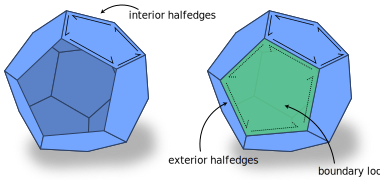

Boundaries
Mesh boundaries in halfedge meshes are modelled by logically treating each boundary loop as if it were a face with an associated set of halfedges. These halfedges incident on boundary loops are referred to as exterior halfedges, while the usual halfedges incident on faces actually present in the mesh are interior halfedges. Any boundary edge of the mesh will have one interior and one exterior halfedge incident upon it.

Exterior halfedges
Nearly all routines involving halfedges include both interior and exterior halfedges, as this is most often what is needed in algorithms. HalfedgeData<> containers can hold data on exterior halfedges, and iterators (like Vertex::outgoingHalfedges) will iterate over both interior and exterior halfedges.
A few routines explicitly indicate whether they process interior halfedges, exterior halfedges, or both, such as HalfedgeMesh::nInteriorHalfedges().
bool Halfedge::isInterior()
Return: true if the halfedge is an interior halfedge, and false if it is an exterior halfedge.
Faces and boundary loops
The separate type BoundaryLoop is used to represent boundary loops, and offers all functionality of other element types. For instance, the BoundaryLoopData<> container can be used to associate data with boundary loops, and BoundaryLoop::adjacentVertices() can be used to iterate over the vertices along a boundary component.
Since boundary loops act like faces in the mesh connectivity, traversing the mesh might yield a “face” referring to what is really a boundary loop. In particular, calling Halfedge::face() on an exterior halfedge will yield the “face” which is its boundary loop. However, this “face” is a lie, we have not really added a face to the mesh: HalfedgeMesh::nFaces() will still report the actual number of faces, etc. The only valid thing to do with a Face which actually a boundary loop is to immediately convert it to a BoundaryLoop, See the example below.
Halfedge myHe = /* some exterior halfedge */; assert(myHe.isInterior() == false); // this is an exterior halfedge // Traverse to "face" Face bFace = myExteriorHalfedge.face() // bFace is really a boundary loop, doing any face things // with it would be invalid assert(bFace.isBoundaryLoop() == true) // Convert the "face" to its true boundary loop form BoundaryLoop bLoop = bFace.asBoundaryLoop(); // Now we can do all kinds of things with it for(Edge e : bLoop.adjacentEdges()) { /* do science */ }
bool Face::isBoundaryLoop()
Returns true if the face is really a boundary loop.
BoundaryLoop Face::asBoundaryLoop()
Convert a face to the equivalent boundary loop. Only valid to call on a face for which Face::isBoundaryLoop() == true.
Face BoundaryLoop::asFace()
Convert a boundary loop back to its equivalent face. The inverse of Face::asBoundaryLoop(). Rarely used.
Element boundary properties
The previous sections describe elements which make up the boundary of a mesh. The methods here identify elements which merely lie along the mesh boundary.
bool Vertex::isBoundary()
Returns true if the vertex is on the boundary. A vertex is on the boundary if any of its incident edges are boundary edges. O(1).
bool Edge::isBoundary()
Returns true if the edge is on the boundary. An edge is on the boundary if either of its incident halfedges are exterior halfedges. O(1).
Note that only edges which lie entirely along a boundary are considered boundary edges. Edges which “point at” the boundary and touch the boundary only at one endpoint are not considered boundary edges by this function.